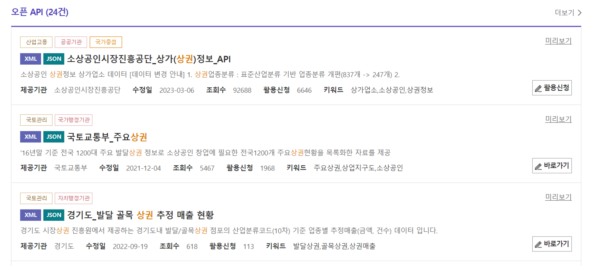
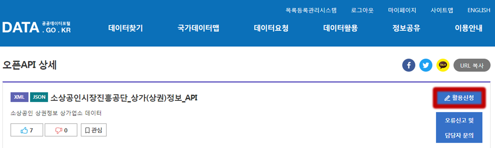
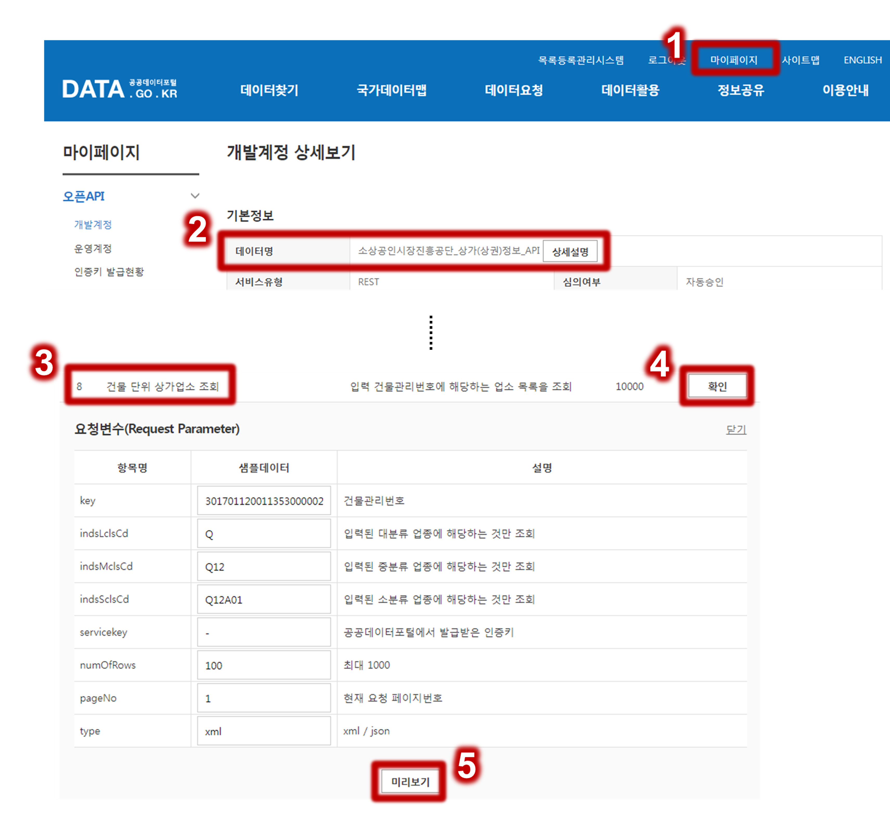
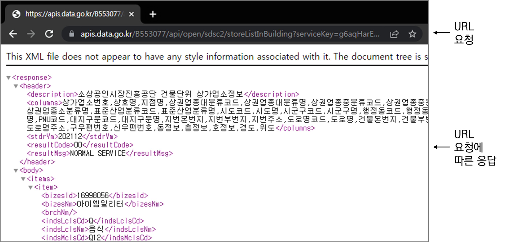
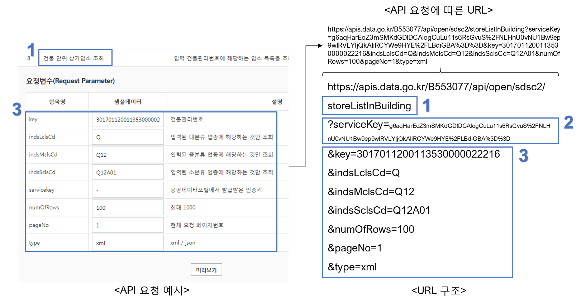

# Package reading
Packages <- c("data.table", "httr", "knitr", "XML", "jsonlite", "dplyr")
install_pkgs <- function(pkgs) {
# 신규 패키지 설치
new_pkgs <- pkgs[!(pkgs %in% installed.packages()[, "Package"])]
if (length(new_pkgs))
install.packages(new_pkgs, dependencies = TRUE)
# 기존 패키지 library 불러오기
sapply(pkgs, require, character.only = TRUE)
}
install_pkgs(Packages)서론
공공데이터 등을 API로 공개한 경우가 최근 많아졌다. 아래는 공공데이터포털에서 상권을 검색한 결과 중 오픈 API로 제공되는 데이터 목록이다. 
첫번째 데이터의 경우, 전국 점포 DB를 한번에 csv 파일로 다운 받을 수 없다. Open API 형태로 상권이나 건물 등의 단위로 Open API를 통해 수집해야 한다.
Open API란?
여기서 API는 클라이언트 요청을 컴퓨터가 이해할 수 있게 만든 체계 또는 규칙을 말한다(Application Programming Interface, API). ‘건물 A에 위치한 점포 리스트를 뽑아줘’, ’B 지점과 가장 가까운 상권명 알려줘’라는 요청을 바로 이해하고 행동하는 사람과 다르게, 서버는 요청사항 별로 구분되는 경로가 정해져야 한다. 이를 이해하도록 만드는 것이 API다.
간단하게 API는 요청을 하는 주체인 클라이언트와 요청에 따른 응답을 하는 서버로 구성된다.

서버에게 요청할 때는 일반적으로 http (url)로 요청한다. 응답은 JSON, HTML 등 다양한 형태로 받을 수 있다.
Open API 활용
위 그림 내용을 직접 요청하고 응답을 받아보자.
Step 1: Open API 활용 신청
Open API 예시는 공공데이터포털에서 제공하는 소상공인시장진흥공단_상가(상권)정보를 대상으로 한다. 이곳에서 먼저 해당 API 활용신청을 한다.

Step 2: 요청하기
신청을 완료하면 마이페이지로 이동하고, 해당 데이터 API를 클릭하고 요청 예시 중 하나인 건물 단위 상가업소 조회를 클릭하고 미리보기를 누른다.

Step 3: 요청에 따른 응답보기
위의 요청에서 미리보기를 누르면 URL로 API 요청이 입력되어, URL에 따른 응답을 볼 수 있다.

요청으로 만들어진 URL 주소는 세가지로 구분할 수 있다.
- 서비스명(건물 단위 상가업소 조회)
- 서비스 key
- 요청 변수

이를 자세히 설명하면,
https://apis.data.go.kr/B553077/api/open/sdsc2/은 소상공인진흥공단 상가(상권)정보 API 주소storeListInBuilding?은 건물 단위 상가업소 조회serviceKey=g6aqHarEo~은 부여받은 API 인증키key=3017011200113530000022216&은 요청 변수 중 key(건물관리번호) 지정indsLclsCd=Q&은 대분류가 Q(음식)에 해당하는 것만 조회indsMclsCd=Q12&은 중분류가 Q12(커피점/카페)에 해당하는 것만 조회indsSclsCd=Q12A01&은 소분류가 Q12A01(커피전문점/카페/다방)에 해당하는 것만 조회numOfRows=100&은 최대 100개 항목을 조회pageNo=1&은 첫번째 페이지를 요청type=xml은 조회를 xml 형식으로 응답
R를 활용한 Open API 활용하기
R를 활용하여 소상공인진흥공단 상가(상권)정보 Open API를 활용하는 방법을 다룬다. 이때 다른 점은 데이터 타입을 json 형태로 응답 받는 것이다.
패키지 및 작업 준비
필요한 패키지를 먼저 불러온다.
이용하고자 하는 Open API key를 입력한다.
serviceKey <- "" # Key 입력예제 1: 건물단위 업소 조회
앞서 open API 이해에서 활용한 건물단위 업소 조회를 활용해보자.
요청
검색창에 직접 입력하는 행위는 R에서는 아래와 같이 할 수 있다.
req_ex <- GET(I("https://apis.data.go.kr/B553077/api/open/sdsc2/storeListInBuilding?serviceKey=g6aqHarEoZ3mSMKdGDlDCAlogCuLu11s6RsGvuS%2FNLHnU0vNU1Bw9ep9wlRVLYIjQkAliRCYWe9HYE%2FLBdiGBA%3D%3D&key=3017011200113530000022216&indsLclsCd=Q&indsMclsCd=Q12&indsSclsCd=Q12A01&numOfRows=100&pageNo=1&type=json"))위 요청을 R에서 구조화한 것은 다음과 같다.
URL <- "http://apis.data.go.kr/B553077/api/open/sdsc2" # 소상공인시장진흥공단_상가(상권)정보_API
ex1_1a <- GET(
url = paste0(URL, "/", "storeListInBuilding"), # 건물 단위 상가업소 조회 서비스
query =
list(serviceKey = I(serviceKey), # 내 API 서비스 키 입력
key = "3017011200113530000022216", # 검색 대상 건물 코드
indsLclsCd = "Q", # 대분류 설정; 음식
indsMclsCd = "Q12", # 중분류 설정; 커피점/카페
indsSclsCd = "Q12A01", # 소분류 설정; 커피전문점/카페/다방
numOfRows = "100", # 최대 검색 항목 수 설정
pageNo = "1", # 페이지 설정
type = "json" # 응답 데이터 형태 설정
)
)응답
아래 코드로 json 형태로 응답된 결과를 처리한다.
ex1_1b <- ex1_1a %>%
content(as = "text", encoding = "UTF-8") %>%
fromJSON() 응답한 정보로부터 API 서비스 설명과 정보를 확인하면 다음과 같다.
ex1_1b$header$description # API 서비스 설명[1] "소상공인시장진흥공단 건물단위 상가업소정보"ex1_1b$body$items # 응답 정보 bizesId bizesNm brchNm indsLclsCd indsLclsNm indsMclsCd indsMclsNm
1 16998056 아이엠일리터 Q 음식 Q12 커피점/카페
indsSclsCd indsSclsNm ksicCd ksicNm ctprvnCd ctprvnNm
1 Q12A01 커피전문점/카페/다방 I56220 비알콜 음료점업 30 대전광역시
signguCd signguNm adongCd adongNm ldongCd ldongNm lnoCd
1 30170 서구 3017064000 둔산2동 3017011200 둔산동 3017011200113530000
plotSctCd plotSctNm lnoMnno lnoSlno lnoAdr rdnmCd
1 1 대지 1353 대전광역시 서구 둔산동 1353 301704298326
rdnm bldMnno bldSlno bldMngNo bldNm
1 대전광역시 서구 둔산로51번길 66 3017011200113530000022216
rdnmAdr oldZipcd newZipcd dongNo flrNo hoNo lon
1 대전광역시 서구 둔산로51번길 66 302830 35233 127.3806
lat
1 36.35413다른 응답과 요청 메세지 정보를 알고 싶다면 오퍼레이션 명세를 확인하면 된다.

예제 2: 상권 내 업소 조회
이대역 상권 내 모든 업소를 조회해보자.
요청
이대역 상권 내 모든 업소 조회를 요청하는 코드는 다음과 같다.
URL <- "http://apis.data.go.kr/B553077/api/open/sdsc2" # 소상공인시장진흥공단_상가(상권)정보_API
ex2_1a <- GET(
url = paste0(URL, "/", "storeListInArea"), # 빌딩 내 업소 조회 서비스
query =
list(serviceKey = I(serviceKey), # 내 서비스 키 입력
key = "9151", # 이대역 상권번호
numOfRows = "1000", # 최대 검색 항목 수 설정
type = "json" # 응답 데이터 형태 설정
)
)응답
이때 요청한 결과는 다음과 같다.
ex2_1b <- ex2_1a %>%
content(as = "text", encoding = "UTF-8") %>%
fromJSON() cbind(ex2_1b$body$items$bizesNm, ex2_1b$body$items$lnoAdr)[c(1:20), ] # 상위 20개 상호명과 주소 [,1] [,2]
[1,] "오피스디포" "서울특별시 서대문구 대현동 60-8"
[2,] "메이퀸" "서울특별시 서대문구 대현동 56-126"
[3,] "미미뷰티" "서울특별시 서대문구 대현동 54-4"
[4,] "파파노다이닝돈부리" "서울특별시 서대문구 대현동 56-110"
[5,] "삼성전자판매이대점" "서울특별시 서대문구 대현동 37-1"
[6,] "데몬헤어" "서울특별시 서대문구 대현동 56-119"
[7,] "파오" "서울특별시 서대문구 대현동 54-4"
[8,] "육쌈냉면" "서울특별시 서대문구 대현동 34-34"
[9,] "이대종합분식" "서울특별시 서대문구 대현동 101-12"
[10,] "네이처컬렉션이대점" "서울특별시 서대문구 대현동 34-31"
[11,] "삼청동궁물떡복이이대점" "서울특별시 서대문구 대현동 53-9"
[12,] "공차" "서울특별시 서대문구 대현동 54-1"
[13,] "올댓뷰티아카데미" "서울특별시 서대문구 대현동 56-2"
[14,] "더페이스샵이대2호점" "서울특별시 서대문구 대현동 37-5"
[15,] "니나키친" "서울특별시 서대문구 대현동 54-6"
[16,] "BK민방경네일" "서울특별시 서대문구 대현동 34-39"
[17,] "지구별고양이" "서울특별시 서대문구 대현동 90-30"
[18,] "라비에벨헤어" "서울특별시 서대문구 대현동 37-69"
[19,] "다다" "서울특별시 서대문구 대현동 56-34"
[20,] "109헤어" "서울특별시 서대문구 대현동 40-39" 예제 3: 행정구역 단위 업소 조회
울산 중구에 위치한 모든 업소 정보를 수집해보자.
요청
아래와 같이 요청을 해본다.
URL <- "http://apis.data.go.kr/B553077/api/open/sdsc2" # 소상공인시장진흥공단_상가(상권)정보_API
ex3_1a <- GET(
url = paste0(URL, "/", "storeListInDong"), # 행정동 단위 상가업소 조회 오퍼레이션 명세
query =
list(serviceKey = I(serviceKey), # 내 서비스 키 입력
divId = "signguCd", # 시군구 행정구역 입력 설정
key = "31110", # 울산 중구 행정구역코드
numOfRows = "1000", # 최대 검색 항목 수 설정
type = "json" # 응답 데이터 형태 설정
)
)응답
응답한 결과를 보기전에, 보낸 요청 쿼리의 응답 개수를 확인해보자.
ex3_1b <- ex3_1a %>%
content(as = "text", encoding = "UTF-8") %>%
fromJSON() ex3_1b$body$totalCount[1] 8907당연하게도 울산 중구에 위치한 업소 개수는 한 요청 쿼리에서 응답받을 수 있는 최대 항목인 1000개를 넘는다. 따라서 다음 1000개씩 모든 응답을 페이지를 넘어가며 수집하는 작업이 필요하고 아래 코드로 가능하다.
db_1a <- rbindlist(
lapply(1:ceiling(ex3_1b$body$totalCount/1000), # 페이지 번호 1부터 총 개수를 1000개로 나눈 값의 올림까지
function(i){
ex3_1b <- GET(
url = paste0(URL, "/", "storeListInDong"), # 행정동 단위 상가업소 조회 오퍼레이션 명세
query =
list(serviceKey = I(serviceKey), # 내 서비스 키 입력
divId = "signguCd", # 시군구 행정구역 입력 설정
key = "31110", # 울산 중구 행정구역코드
numOfRows = "1000", # 최대 검색 항목 수 설정
pageNo = i, # i 번째 페이지 항목 설정
type = "json" # 응답 데이터 형태 설정
)
) %>%
content(as = "text", encoding = "UTF-8") %>%
fromJSON()
ex3_1b$body$items
}))length(db_1a$bizesId) # 수집한 업소 총 개수[1] 8907kable(db_1a[1:3]) # 상위 3개 결과| bizesId | bizesNm | brchNm | indsLclsCd | indsLclsNm | indsMclsCd | indsMclsNm | indsSclsCd | indsSclsNm | ksicCd | ksicNm | ctprvnCd | ctprvnNm | signguCd | signguNm | adongCd | adongNm | ldongCd | ldongNm | lnoCd | plotSctCd | plotSctNm | lnoMnno | lnoSlno | lnoAdr | rdnmCd | rdnm | bldMnno | bldSlno | bldMngNo | bldNm | rdnmAdr | oldZipcd | newZipcd | dongNo | flrNo | hoNo | lon | lat |
|---|---|---|---|---|---|---|---|---|---|---|---|---|---|---|---|---|---|---|---|---|---|---|---|---|---|---|---|---|---|---|---|---|---|---|---|---|---|---|
| 10078174 | 중앙농협하나로마트태화점 | 태화점 | D | 소매 | D03 | 종합소매점 | D03A02 | 수퍼마켓 | G47121 | 슈퍼마켓 | 31 | 울산광역시 | 31110 | 중구 | 3111060000 | 태화동 | 3111011100 | 태화동 | 3111011100104730001 | 1 | 대지 | 473 | 1 | 울산광역시 중구 태화동 473-1 | 311103169020 | 울산광역시 중구 태화로 | 186 | 3111011100104730001001410 | 중앙농협태화지소 | 울산광역시 중구 태화로 186 | 681819 | 44456 | 1 | 129.2961 | 35.55191 | |||
| 10295347 | 헤펠레D.I.Y목공방남구점 | 남구점 | D | 소매 | D15 | 가구소매 | D15A01 | 일반가구소매 | G47520 | 가구 소매업 | 31 | 울산광역시 | 31110 | 중구 | 3111065000 | 성안동 | 3111010900 | 성안동 | 3111010900104040002 | 1 | 대지 | 404 | 2 | 울산광역시 중구 성안동 404-2 | 311103169014 | 울산광역시 중구 성안로 | 232 | 3111010900104040002000001 | 울산광역시 중구 성안로 232 | 681300 | 44417 | 1 | 129.3205 | 35.58005 | ||||
| 10536601 | 예가네숯불갈비 | Q | 음식 | Q01 | 한식 | Q01A02 | 갈비/삼겹살 | I56111 | 한식 음식점업 | 31 | 울산광역시 | 31110 | 중구 | 3111055000 | 복산2동 | 3111010300 | 복산동 | 3111010300101950001 | 1 | 대지 | 195 | 1 | 울산광역시 중구 복산동 195-1 | 311104307154 | 울산광역시 중구 도화골6길 | 1 | 3111010300101950001011330 | 울산광역시 중구 도화골6길 1 | 681220 | 44477 | 1 | 129.3326 | 35.56699 |